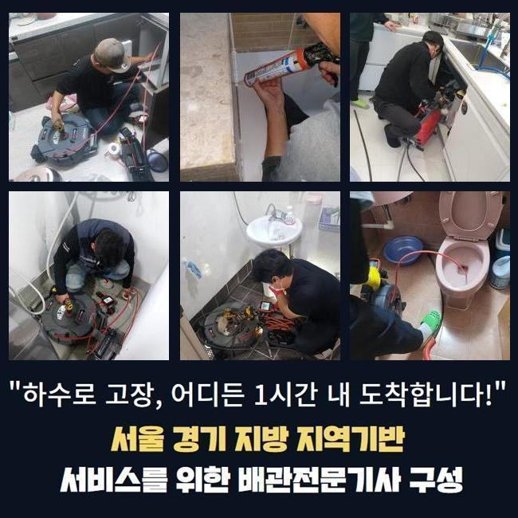
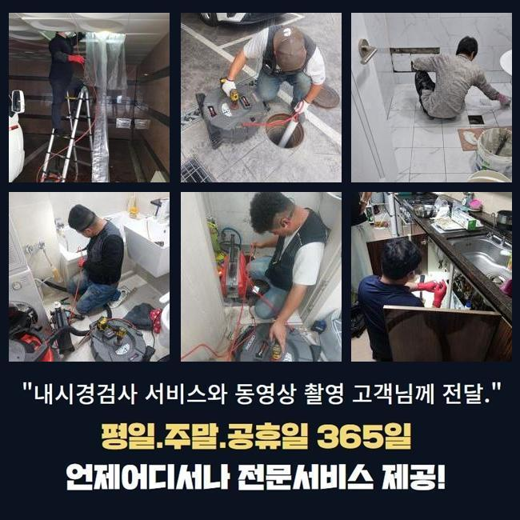
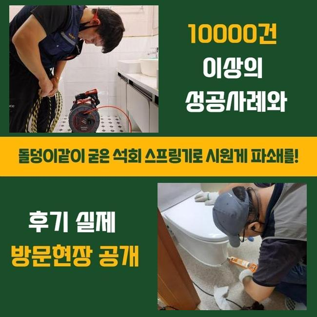
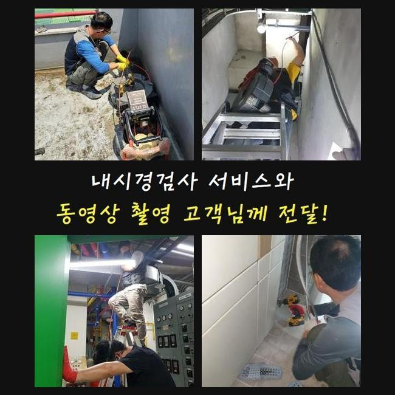
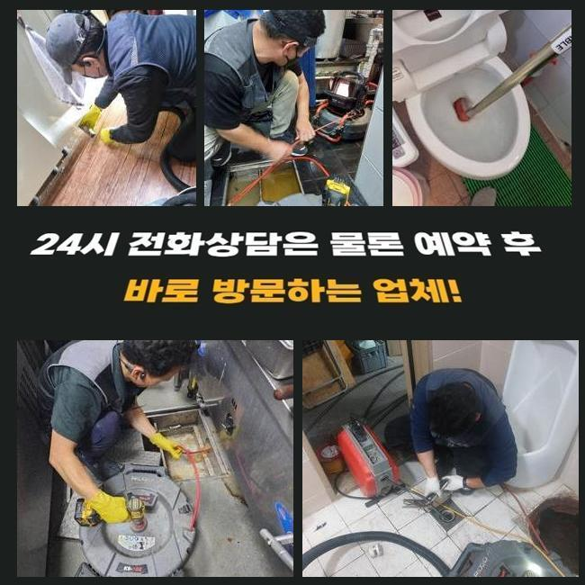

🏠 아산 용화동화장실하수구역류 인주면 고압세척비용 설비공사
아산 용화동 변기막힘 전문 시공 후기

📋 작업 개요
- 위치: 아산 용화동, 용화동, 아산
- 서비스 유형: 변기막힘, 하수구막힘, 배관막힘, 누수수리, 역류해결, 뚫는업체, 배관청소, 고압세척, 설비공사, 악취차단
- 작업 일시: 2025. 6. 3. 12:08
- 업체명: 하수구수사대 (010-5615-2118)
🔍 문제 상황
아산 용화동화장실하수구역류 인주면 고압세척비용 설비공사
하수관이 차단되는 사태는 한번쯤은 경험하셨으리라 봅니다
급작스럽게 화장실 변기나 주방시설에서 발현되는 배수관 정체는 평상시 생활에 고충을 촉발시킬수 있죠
그런데 개수대에서는 왜 막힘이 발현되는 걸까요
주방공간은 요리할때 발생되는 음식 쓰레기나 미세한 수세미 파편들이 배수관에 적체되어 물막힘이 생긴답니다
그렇게 되면 배수기능이 사라질뿐만 아니라 고약한 냄새까지 퍼지며 시간의 흐름에 따라서 하수관이 낡게되어서 물샘까지 야기할수가 있답니다
보통 해당 사태가 일어났다면 화학제품을 부어서 해결해보려 시도하시는데요
그렇지만 그런 방안은 잠시간의 물길만 만들뿐 본원적인 요인을 소멸시키지 못한다면 정체가 재발할수 있어요
이물질이 배수관의 하부쪽에 자리잡았다면 일반인이 쉽게 목도하거나 처리하기 힘겹기 때문이랍니다
거기에 더해 서툴게 수리를 한다면 반대로 배관을 훼손하거나 찌꺼기들을 올바르게 처치하지 못하는거죠
그렇기 때문에 하수관이 막히게 되면 전문가를 찾아서 빠르고 정밀하게 처리하는게 바람직합니다

🔎 원인 분석
💡 전문가 진단: 정밀 진단 장비를 사용하여 슬러지의 고착 여부를 판명하고 타격/세척 작업을 실시했습니다.
어저께 저흰 배관문제 이슈로 시공문의를 받았어요
고객께선 욕실에서 생긴 배수관정체로 오취가 생기고 역류까지 일어나 우리의 일과에 막대한 불편함을 감당하고 있으셨죠
냄새가 너무 심해서 일상생활을 해나가기가 곤란한 지경이었고 역류까지 일어나 가정안이 더럽혀지는 정황에 닿게 됐다 말하셨습니다
의뢰자의 괴로움을 조속히 없애드리려 즉각적으로 문제의 장소로 이동했어요
내방한뒤에 상황에 대한 말씀을 듣고 사태를 상세하게 파악하였어요
고객님은 욕실에서 생활하수가 빠지지 못하는 것은 물론 역류하는 상황까지 발발하여 내부공간이 오손된 상황이라고 토로하셨어요
한달전부터 미세한 막힘현상이 목견되었는데 방치하는 바람에 더욱더 악화한 상황이었죠
그러할때 간단하게 뚫음을 실행하는것으론 문제점을 해결해나가기 어렵죠
이물질들이 배관의 곳곳에 단단하게 접착된거라 안쪽의 정황을 조사한뒤 합리적인 계획을 세워 공정에 임해야 됩니다
내부에서 생겨난 트러블은 직접적으로 파악하기 힘들때가 많죠
그러므로 저희들은 배관내시경을 활용해 관로내부 현황을 밀도있게 조사하는 공정에 들어갔어요
내시경cctv를 활용하여 점검하니 관로안에는 장기간 누증된 음식 잔재들과 기름성분이 뒤엉켜 통로를 완전하게 차단시키고 있었죠

🔧 작업 과정
또 잔재들이 돌처럼 굳어져 간소하게 고압청소만 하여서는 처치가 힘들었죠
진단을 끝낸다음에 샤프트기기를 통해서 관로에 고정된 슬러지를 소제하는 공정을 속행했어요
플렉스샤프트는 관로안에 누적된 이물들을 효율적으로 부수고 없앨수 있기에 여러종류의 잔존물질이 움직이지 않는 상황에서 커다란 역할을 수행합니다
분쇄기기는 강한 회전기능을 토대로 잔재들을 미세하게 분쇄해서 관로에 상존하는 단단한 석회물질이나 기름슬러지를 깨끗이 소멸시킬수 있어요
다만 너무 강력한 힘으로 분쇄를 단행한다면 관로가 고장날수도 있으므로 전문적 테크닉과 주의깊은 시공이 요망되죠
이번에 방문한 곳은 또한 침전물들이 배관에 단단하게 고정되어 있었기에 한 두차례의 가동만으로는 정비를 완수하기 힘겨웠죠
주변에 붙은 백회물질은 한층 그런 정황을 힘들게 했죠
그러므로 저희들은 고압세정기기와 분쇄장비를 동시 이용하면서 잔재들을 소제하고 안전히 제거하는 작업을 단행하였어요
강인한 파워로 침전물을 없앨때는 그것들이 집안으로 전이되지 않게끔 신경써야 합니다
찌꺼기들이 분사되어 주변환경이 심히 오염된다면 수습이 어려워질수도 있기에 각별한 주의가 요망되죠
그러하기에 작업과정에서 이러한 상황을 막으려 보양업무를 선행했으며 고객님이 염려하지 않으시게끔 세밀하게 공정을 실시하였습니다
찌꺼기를 제거하고나서 재차 배관카메라를 집어넣어 관로를 점검했어요
안에 상존하는 석회물질이나 이차적인 고장여부를 체크하는건 무척 중대한 업무입니다
본 현장에선 여러번 관로 안을 탐지하여 연쇄적으로 발발하기 쉬운 문제점을 예방하였죠
전체 찌꺼기들이 사라졌다는 걸 확인하고 수돗물을 내려보내며 배수기능을 회복했는지 검사해 보았답니다
온전히 소멸되는 모습을 직각적으로 입증하였죠
배수공으로 폐수가 원활하게 흘러가는 정황을 고객분도 인지하셨고 완전하게 고쳤다는걸 확인했어요
상황을 방치하여 침전물이 한층더 많아진다면 주위분들에게까지 악영향이 전이될수 있죠
그렇게 된다면 고쳐야할 요소가 많아질 가능성이 커지기에 선제적 검사를 받으시는 것이 마땅합니다


✅ 작업 완료
거기에 더해 하수구막힘은 우리의 일상생활에 고충을 발생시키므로 되도록이면 신속하게 정리하는게 좋죠
관로막힘 상황이 길어진다면 구린내가 올라오는것을 포함해서 관로훼손에 따른 누수증세까지 생길 가능성이 있다는걸 생각해야 돼요
시공전엔 꼭 알맞은 수선장비를 소지해야 하죠
그것들이 충분히 없는경우 관측을 똑바로 못해서 고장이 또 생길수가 있답니다
해당 사태들로 진단이 필요하다면 저희쪽으로 편하게 전화해 주세요



⚠️ 베란다 누수 및 방수 관리 방법
- ✅ 비가 많이 올 때 창틀 주변이나 아래층 천장에 얼룩이 생기는지 정기적으로 확인해 보세요.
- ✅ 우수관 주변 실리콘 마감이 들뜨거나 깨진 틈새가 있는지 손상 여부를 수시로 체크하세요.
- ✅ 베란다 바닥 타일의 줄눈(메지)이 소실되면 그 틈으로 물이 침투하여 누수가 유발됩니다.
- ✅ 누수 의심 증상 발견 시 방치하면 아래층 손실이 커지므로 즉시 전문가의 진단을 받으십시오.
💡 핵심 정리
- 확실한 장비 작업(내시경 점검 및 샤프트 스케일링)으로 원인을 뿌리 뽑습니다.
- 작업 후 1년 이내에 동일한 부위 재발 시 100% 무상 A/S 서비스를 보장합니다.
- 서울 · 경기 · 인천 전 지역에 24시간 언제든 긴급 출동할 수 있도록 항시 대기 중입니다.
❓ 자주 묻는 질문 (FAQ)
🚨 아산 용화동 변기막힘 문제로 고민이신가요?
정확한 원인 진단과 확실한 시공으로 재발 없는 해결을 약속드립니다.
24시간 긴급 출동 | 서울 · 경기 · 인천 전지역 | 1년 내 재발 시 무상 A/S